Novelty decay Tiimo's grid of colourful emoji task icons shows the cosmetic personalisation that gives an app its early-days novelty hit, which is the kind of surface delight that fades once the newness is gone. Tiimo 'make it yours' icon picker (2025) · source
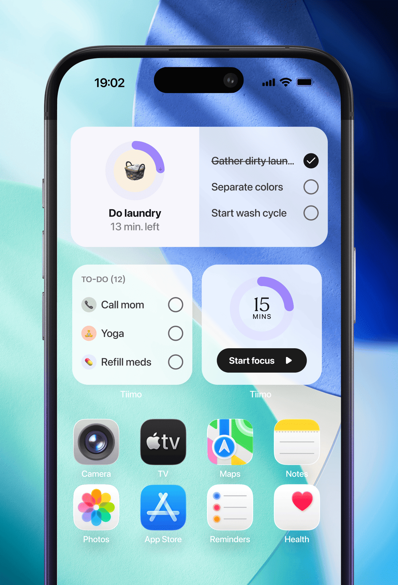
Out of sight, out of mind iPhone home screen with Tiimo timer and to-do widgets puts tasks and a countdown in view without opening the app, countering out-of-sight-out-of-mind. Tiimo home-screen widgets (2025) · source
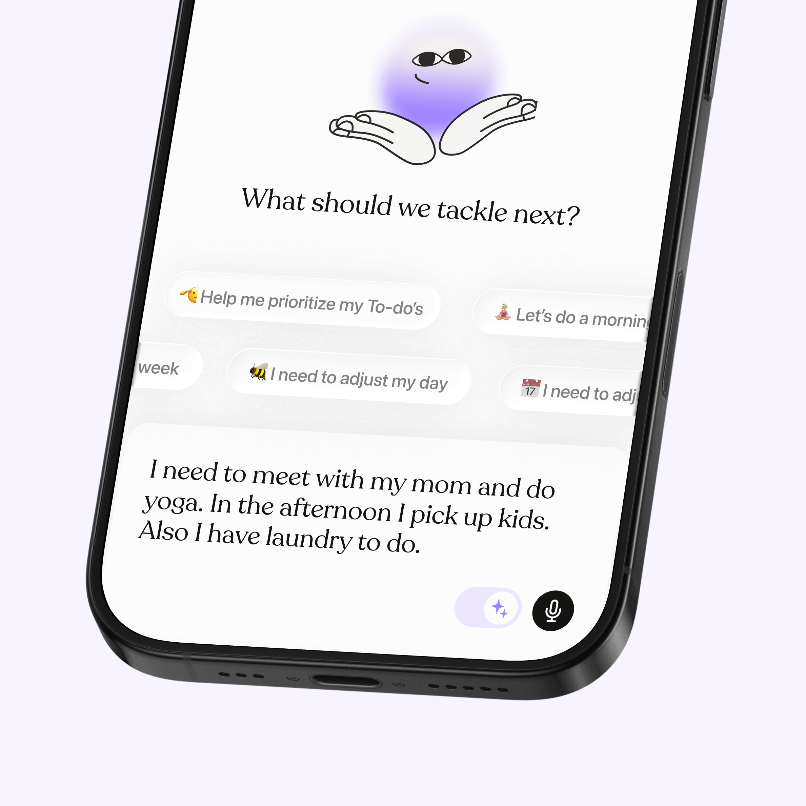
Capture friction Tiimo's 'What should we tackle next?' screen with a microphone button and a spoken brain-dump shows one-step voice capture that minimises the taps needed to add tasks. Tiimo voice/AI capture prompt (2025) · source
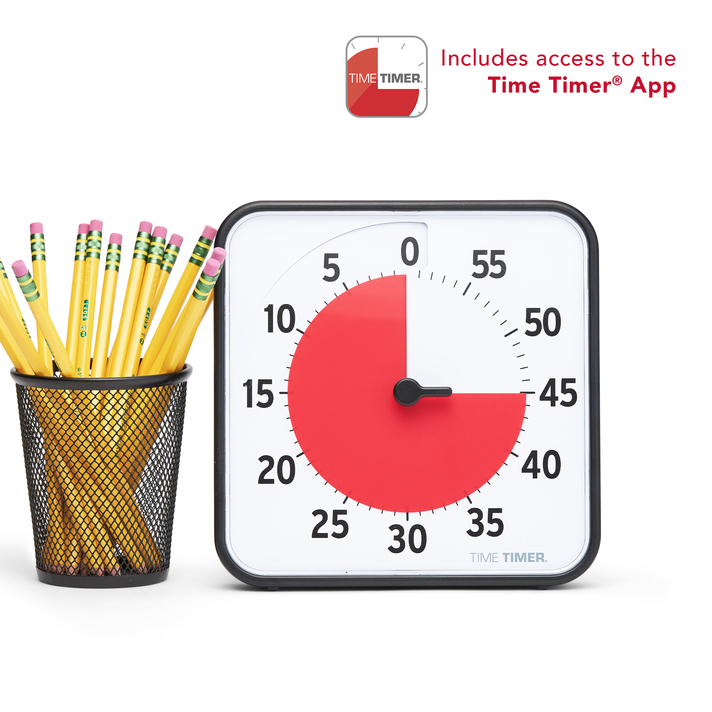
Time blindness support The Time Timer shows remaining time as a shrinking red disc, making elapsed time visible at a glance for people with time blindness. Time Timer physical timer and app (2025) · source
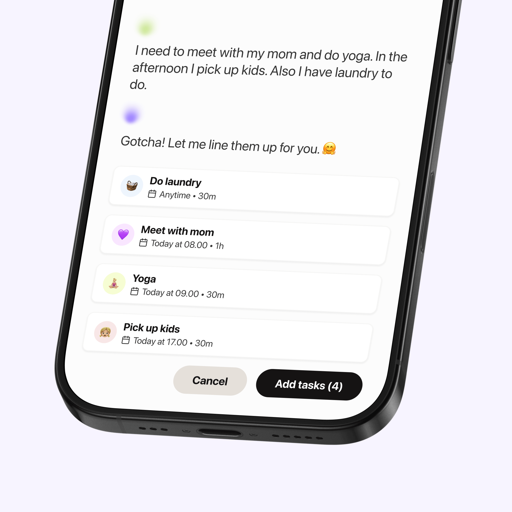
Task initiation and breakdown A rambling spoken to-do is turned into separate timed tasks ('Do laundry 30m', 'Yoga', 'Pick up kids') ready to add, lowering the barrier to starting by decomposing the mess. Tiimo AI task breakdown output (2025) · source
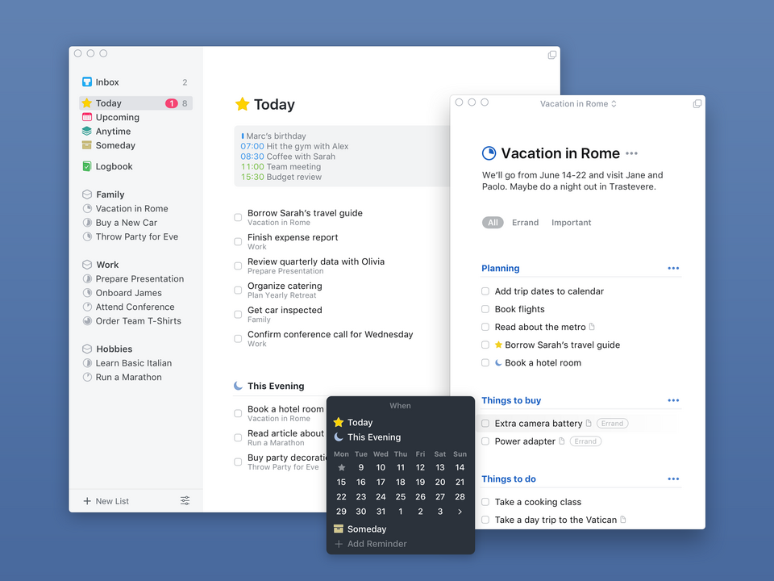
Over-organization trap Things 3's sidebar of Inbox, Upcoming, Anytime, Someday plus areas, projects and headings shows how much structure an app invites users to build and tweak instead of doing tasks. Things 3 for Mac main window (2025) · source
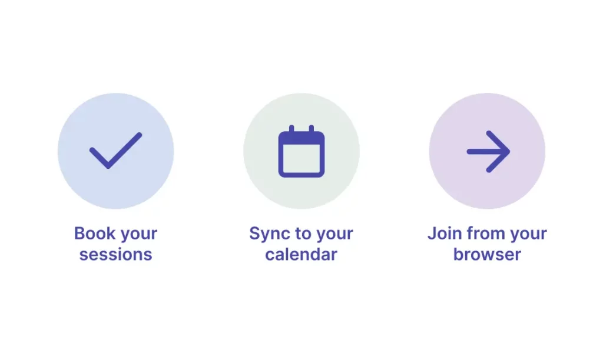
Gamification and body doubling Focusmate's three steps (book sessions, sync calendar, join from browser) illustrate virtual co-working, the body-doubling feature that adds accountability by scheduling a live partner. Focusmate session booking steps (2025) · source
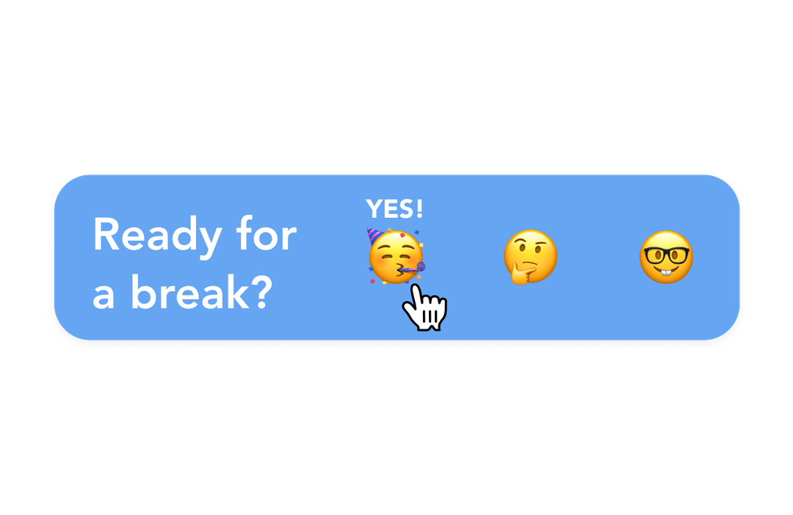
Notification fatigue A 'Ready for a break?' prompt with response choices shows a reminder that asks for an answer instead of pinging blindly, the kind of interactive nudge meant to resist becoming ignored noise. Sunsama break reminder prompt (2025) · source
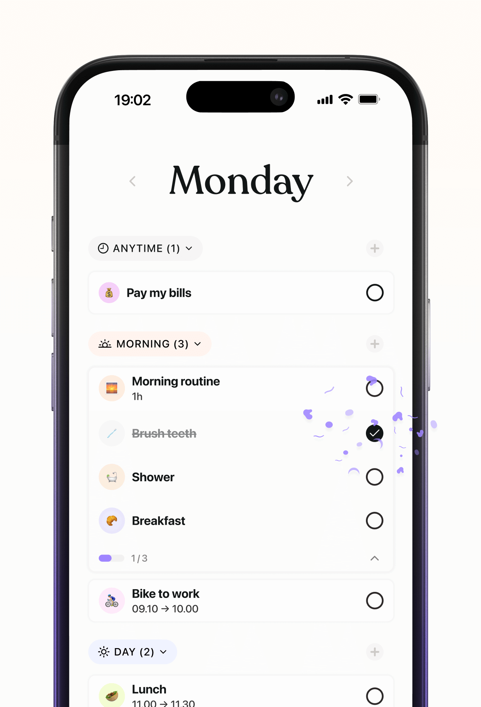
Overwhelm from list length The day view collapses tasks into labelled sections with counts (Morning (3), Day (2)) so only a slice of the list shows at once, countering long flat lists. Tiimo visual daily plan (2025) · sourceNovelty decay Finch's cartoon birds are the pet-and-cuteness hook that drives a burst of early engagement, the honeymoon style reward that tends to wear off (modern marketing art). Finch self-care pet app preview (2025) · source
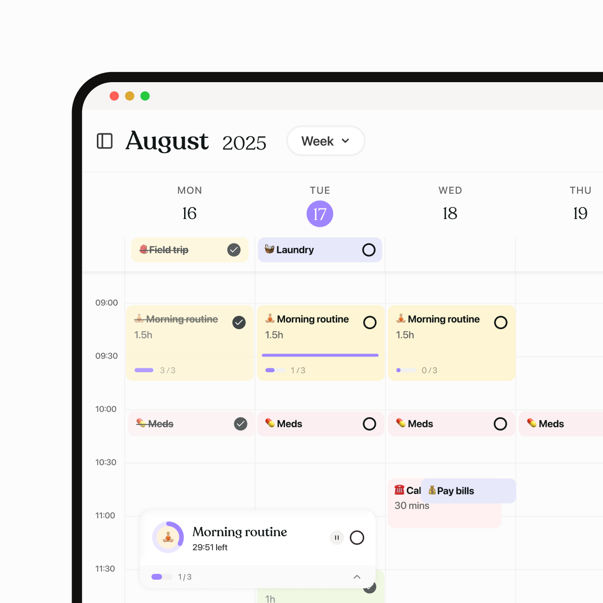
Time blindness support The week calendar lays tasks as timed blocks with durations (1.5h, 30 mins) and a running routine timer, making time visible. Tiimo desktop week time-blocking view (2025) · source
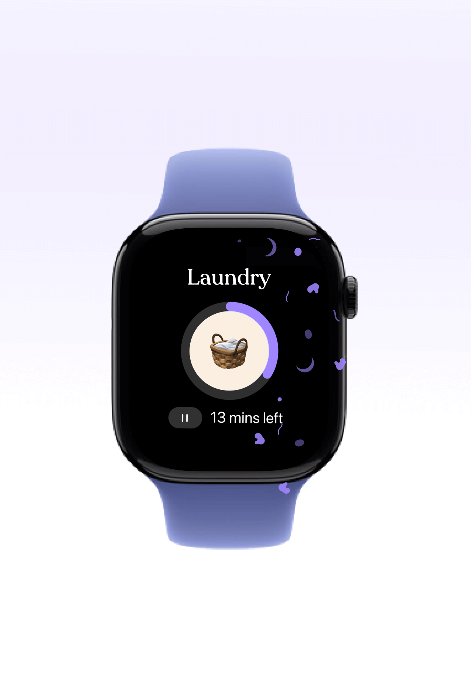
Time blindness support An Apple Watch face shows the task 'Laundry' with a circular progress ring and '13 mins left', a wrist-level visual countdown. Tiimo Apple Watch focus timer (2025) · source
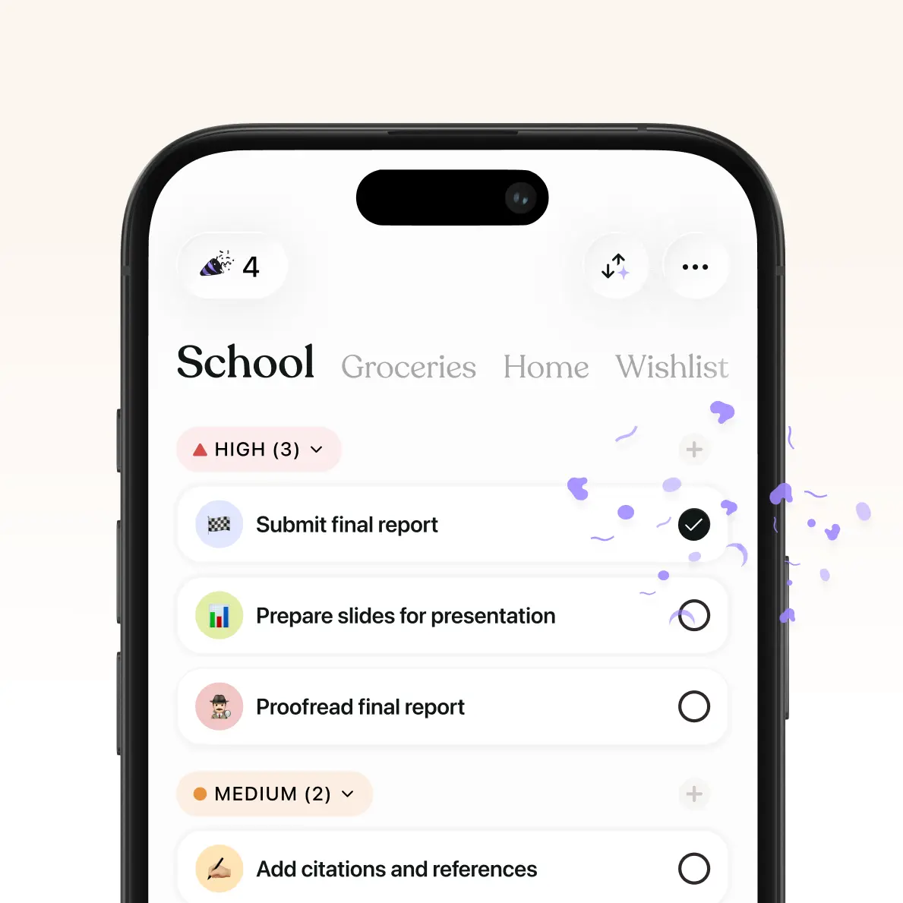
Gamification and body doubling Checking off a task triggers a purple confetti burst and a small streak counter, the reward-feedback layer of gamified todo apps. Tiimo to-do lists with completion confetti (2025) · source